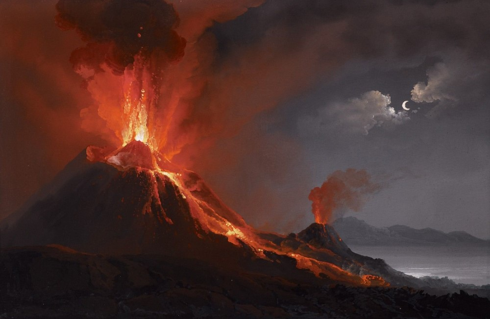

←
←
DOMINANDO IL GOLFO CAMPANO CON LA SUA INCONFONDIBILE SILHOUETTE A DUE CIME, QUESTO GIGANTE DI ROCCIA INCARNA UNA DELLE TESTIMONIANZE PIÙ STRAORDINARIE DEL LEGAME TRA LA STORIA UMANA E LE FORZE DELLA TERRA.
Il Vesuvio si trova vicino alla città di Napoli ed è uno dei vulcani più famosi al mondo. È noto per l'eruzione del 79 d.C., che distrusse le città di Pompei ed Ercolano. Questo è un vulcano di tipo esplosivo, quindi potenzialmente molto pericoloso. L'ultima eruzione risale al 1944, da allora è in fase di quiescenza. Vesuvio è considerato attivo e costantemente controllato. La presenza di numerose persone nelle vicinanze aumenta il rischio in caso di futura eruzione.
| Stato | 🟡 Quiescente |
| Regione | Campania |
| Paese | Italia |
| Eruzioni storiche | 50+ |
| Parco naturale | Sì |
